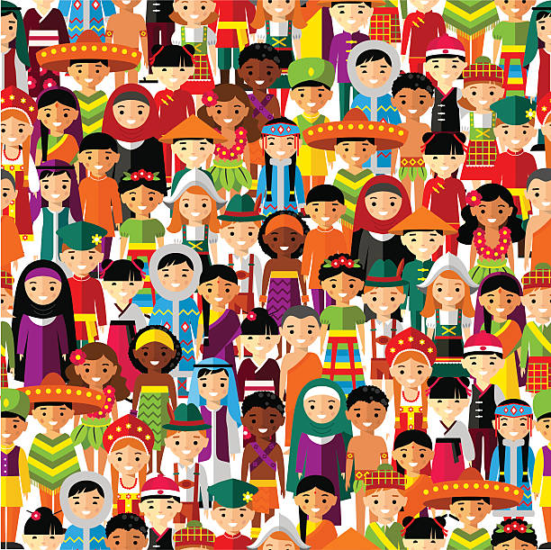
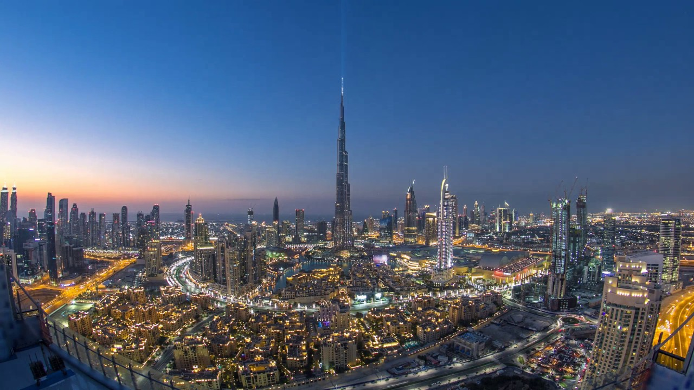

Tourism is a dynamic and culturally enriching industry that transcends geographical boundaries, offering travelers a chance to explore the diverse tapestry of our world. Historically, tourism can be traced back to ancient civilizations, where people journeyed for trade, religious pilgrimages, or leisure. Over time, it evolved into a global phenomenon, with culture playing a pivotal role in shaping the experiences of travelers.
Culture is an integral aspect of tourism, as it offers a window into the traditions, art, and heritage of a destination. Every place has a unique cultural identity, reflected in its architecture, festivals, and customs.

Food A delightful facet of tourism is the opportunity to savor a destination's culinary delights. Local cuisine embodies the essence of a culture, and trying popular foods can be a memorable part of any journey.
Landmarks Ranging from natural wonders like the Grand Canyon to iconic landmarks like the Eiffel Tower, enthrall visitors with their beauty and historical significance. Tourism is a gateway to discovery, fostering cross-cultural understanding and fostering a sense of unity in our diverse world.
